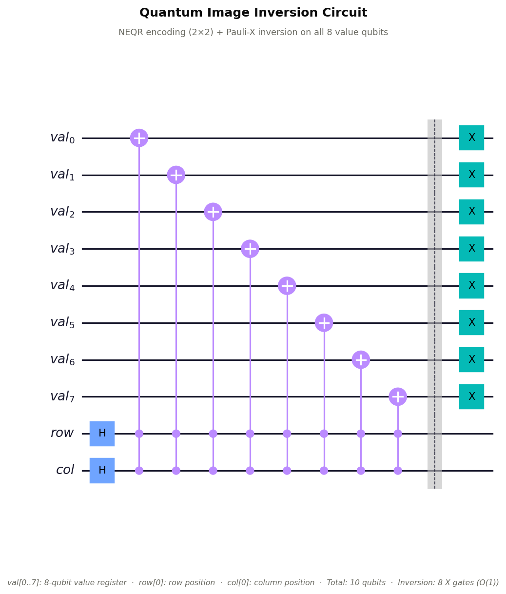
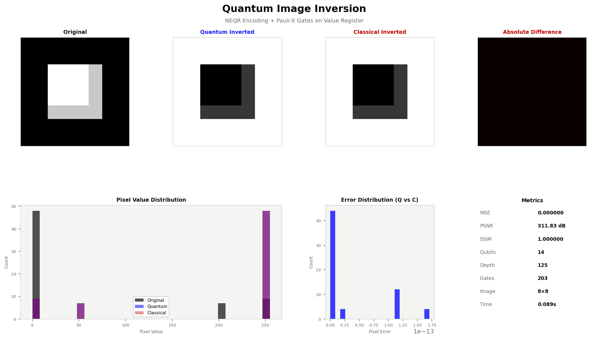

Quantum Image
Inversion
Pixel-perfect image inversion in $O(1)$ additional quantum gates using Pauli-X operations on the NEQR value register. Because NEQR encodes every pixel into a single quantum superposition, flipping all pixels takes exactly 8 gates — regardless of image size.
Theory & Algorithm
Classical image inversion computes $f'(i,j) = 255 - f(i,j)$ for every pixel, requiring $O(N \cdot M)$ sequential subtraction operations. Quantum inversion exploits the NEQR superposition to apply this transformation to all pixels simultaneously — with a constant number of extra gates.
Classical Baseline
For each pixel $(i, j)$ in an $N \times M$ image, compute the complement:
Cost: $O(N \cdot M)$ arithmetic operations — one per pixel.
Quantum Inversion — Bitwise NOT via Pauli-X
In NEQR, each pixel intensity is stored as an 8-bit binary string in the value register. The Pauli-X gate performs a bitwise NOT on a single qubit: $X|0\rangle = |1\rangle,\; X|1\rangle = |0\rangle$. Applied to all 8 value qubits simultaneously, this yields the arithmetic complement of the intensity — precisely the operation we want.
Because the NEQR state $|I\rangle$ encodes all pixels in superposition, a single application of $X^{\otimes 8}$ to the value register inverts every pixel at once:
The inversion adds exactly 8 Pauli-X gates to the circuit — a constant overhead completely independent of image resolution.
Circuit Diagram

Qiskit circuit for NEQR-encoded image inversion on a 2×2 test image (10 qubits).
Hadamard gates prepare the position registers in uniform superposition; CCX (Toffoli)
gates encode the non-zero pixel; the barrier separates encoding from the 8 Pauli-X
inversion gates applied to the value register val[0..7].
Conceptual Layout — NEQR Preparation + Inversion
Results & Validation
The quantum output is compared pixel-by-pixel against the classical formula $f' = 255 - f$. On Qiskit's exact statevector simulator, the two are numerically indistinguishable — MSE is zero and PSNR is unbounded.

Figure 1. From left: original image, quantum-inverted result, classical-inverted result, absolute pixel difference (all zeros — perfect agreement), pixel intensity histograms, error distribution, and circuit metrics panel. The difference image is uniformly black, confirming exact bitwise equivalence.
Quantum vs Classical Comparison
| Metric | Quantum (NEQR + $X^{\otimes 8}$) | Classical ($f' = 255 - f$) |
|---|---|---|
| Pixel Error (MSE) | 0.0000 | 0.0000 (baseline) |
| PSNR | ∞ dB | ∞ dB (baseline) |
| SSIM | 1.0000 | 1.0000 (baseline) |
| Gate Complexity | $O(1)$ — exactly 8 X gates | $O(N)$ operations |
| Reversibility | Inherent ($X^2 = I$) | Requires a separate pass |
| Parallelism | All pixels simultaneously | Pixel by pixel |
Implementation
The inversion module (src/inversion.py) accepts any NumPy image array
and automatically resizes it to the nearest power-of-2 dimensions required by NEQR.
Grayscale images are expected; colour images should be converted before passing.
import inversion
import numpy as np
from PIL import Image
# Load any grayscale image
img = np.array(Image.open("photo.jpg").convert("L"), dtype=np.float64)
result = inversion.run(img)
# result is a dict with the following keys:
# original, quantum, classical — NumPy arrays (H×W, float64)
# mse, psnr, ssim — quality metrics vs classical
# qubits, depth, gate_count — circuit resource counts
# elapsed, image_size — runtime and dimensions
print(f"MSE: {result['mse']:.6f}")
print(f"PSNR: {result['psnr']:.2f} dB")
print(f"SSIM: {result['ssim']:.6f}")Qubit Scaling by Image Size
| Image Size | Value Qubits | Position Qubits | Total |
|---|---|---|---|
| 4×4 | 8 | 4 | 12 |
| 8×8 | 8 | 6 | 14 |
| 16×16 | 8 | 8 | 16 |
| 32×32 | 8 | 10 | 18 |
| 64×64 | 8 | 12 | 20 |
| 256×256 | 8 | 16 | 24 |